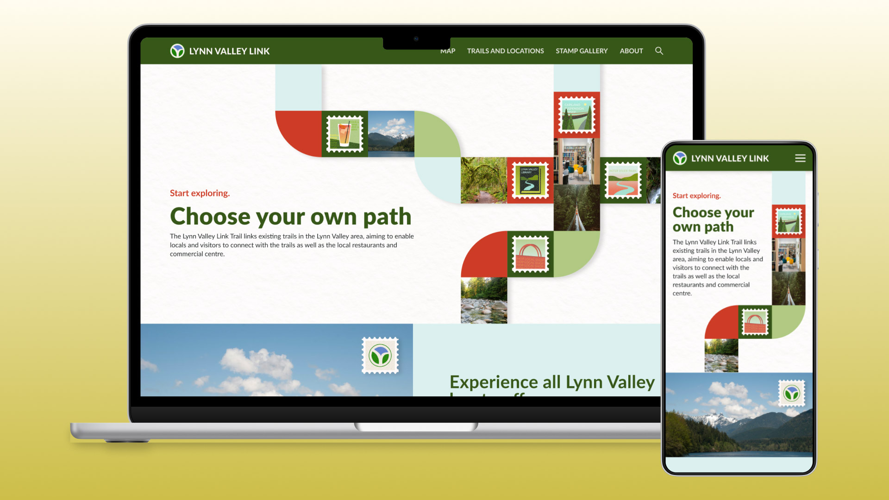
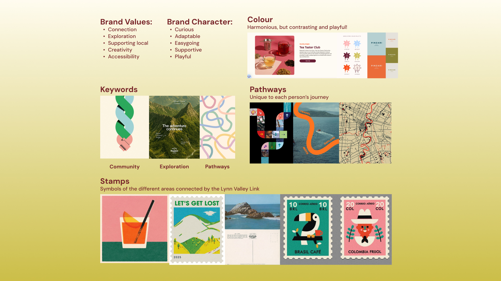
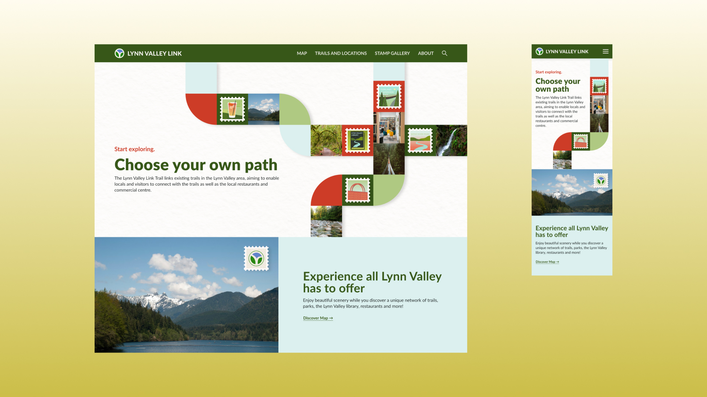
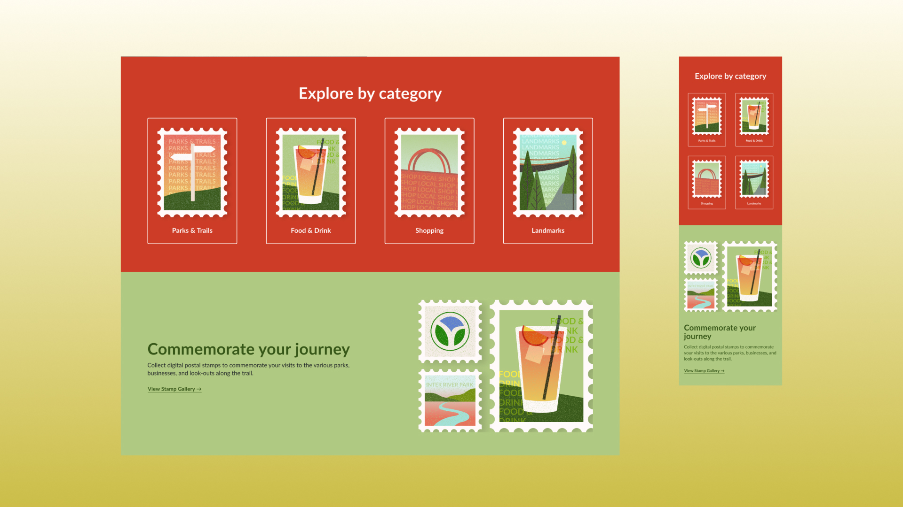
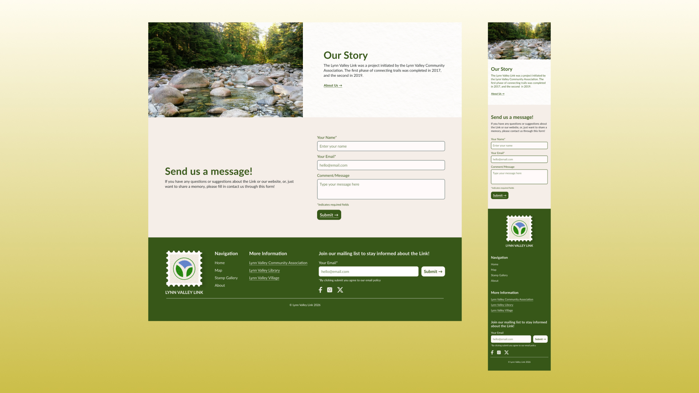
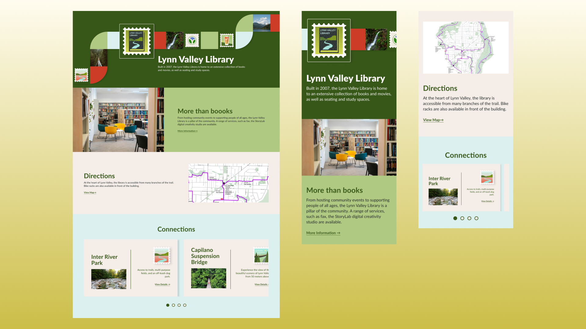
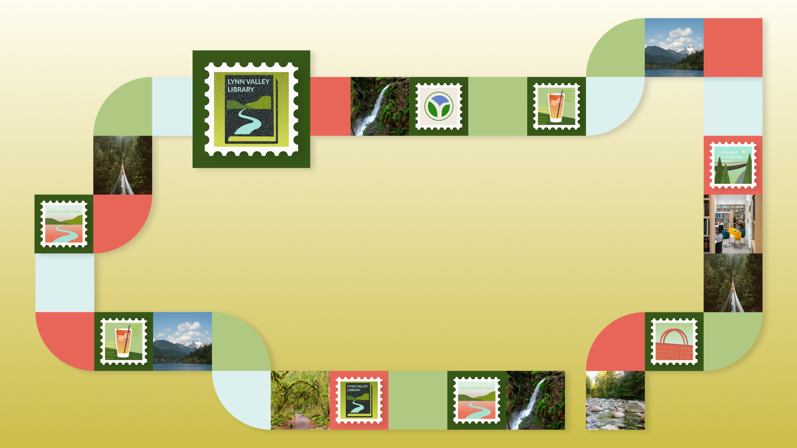
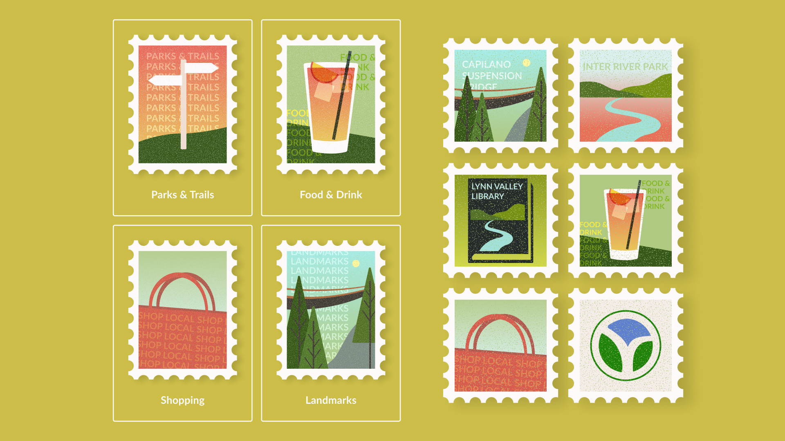

Problem
The current website for the Lynn Valley Link only had a PDF of the trail map and no distinct identity since it was just a page on the Lynn Valley Community Association website.
In order to encourage people to visit the location both digitally and physicall, the goal was the redesign the website using a contrasting design genre. As a series of interconnected trails meant to bring together the community and enable people to choose unique paths to explore and meet their needs, the website was designed in a way that was both visually appealing and easy to navigate, while also providing information about the trails and the surrounding area.
Outcome
A high-fidelity mockup design for a responsive website for the Lynn Valley Link using the motifs of stamps and postcards and pathways to speak to the community and exploration aspects of the Link and how they are often intertwined in the space. Because users could be researching beforehand at home (laptop), or checking the map on the trails (mobile phone), the website was designed to be responsive.
My Role
- Product Designer
Team
- Solo Project
Timeline
- 4 weeks
Tools
- Figma

Art Direction
In creating the visual identity for the Lynn Valley Link website, I focused on creating a design that spoke to the interplay between the community and the natural environment. The use of a stamp motif throughout the website was intended to emphasize the community and exploration aspects of the Link, while also providing a sense of nostalgia and playfulness. The color palette was chosen to reflect Lynn Valley's natural landscape, combining constrating colours to create a playful and inviting atmosphere.

Hero Section
Hero section graphic incorporates a pathway motif to speak to the exploration and customization aspect of the Lynn Valley Link, including a CTA to encourage users to explore the trails and learn more about the Link. Because a key activity for users would be to use the map to navigate the trails, a link to the map is included in the second section for easy access.

Categories & Stamp Collecting
The next section of the homepage allows users to explore the trails based on their needs and interests, with categories that reflect the different components of the Link, like the commercial centres (Food & Drink, Shopping), Parks & Trails and other landmarks and community centres like the Lynn Valley Library. The stamp collecting feature encourages users to explore different trails and locations and collect stamps for each location they visit, adding a gamification element to the experience.

About & Contact
The next section of the homepage links to the story of the Lynn Valley Link's creation so users can learn more about the project. Users can also contact the team through the message function or subscribe to the mailing list for updates and announcements. Since the Lynn Valley Link is a community project, the ability for the community to reach out with any comments of feedback is important to ensure the project is meeting the community's needs and expectations. The footer contains additional information about the project, including links to the social media accounts and other resources.

Location Page
The location page for the Lynn Valley Library includes a hero section with a variation of the pathway motif, a map of the location, and links to information about the library's hours and services. The section below with the postcard motif gives users the option to explore other locations in the area, emphasizing the connection between its location and the surrounding community.

Design Elements - Pathways
The pathway motif was created using a combination of illustrations and photographs to allude to both the natural environment and community aspects, as well as interactions within these spaces. The illustrations were created in a stamp style to reflect the community and exploration aspects of the Link, while the photographs help ground the design within the physical space. The pathway tiles can be used in different combinations to create a variety of layouts and designs on different pages of the website.

Design Elements - Stamps
The stamp motif is used throughout the website to reflect the creative and exploratory aspects of the Lynn Valley Link, and the collection aspect is reminescent of collecting stamps for differnt locations and experiences. Each stamp was designed using vector illustrations to create a cohesive and visually appealing design that reflects the unique character of each location, and can also be scaled up or down for different applications.